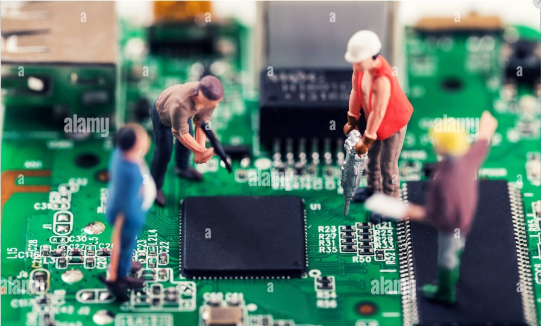

<html>
    <head>
        <title>Informática</title>
        <link rel="stylesheet" href="menu.css" type="text/css">
        <meta charset="utf-8">
        <meta name="viewport" content="width=device-width, initial-scale=1">
    <script type="text/javascript" src="https://gc.kis.v2.scr.kaspersky-labs.com/FD126C42-EBFA-4E12-B309-BB3FDD723AC1/main.js?attr=Z0dCvJZnW8FntiYOtHVMRqM9wCNp7LuZlb_M91egEnR8GIRFGk04qBP4P9T_VYeY_nZN7jpcpKMHBWI-yoG_cr4iSEIdDdxROwe89pzfgkklYvcAPZ-jXB6FJrhtyYq2_TtQ3Q9x0Bgov8PofisDd98xDOTh7aQ7Ooqks0YDh1zoaKtCBjEuhJGM0C_dObUIHJKpDza0D1de9uGxhSlCo6oyAGygxUglNgCNd3xmj0gbSqOUDtOaTw_gPbweCdYWXCdlEuTneEuE_zoHbTWGTmLaTjSoS7efpuaFGLY92z2uhCxXwPMdWl3hZHmlOpPtx4Htc6caeJoW6MKFOo7wlo8FxO3zRlHH23vJtm6P3hsvw-zKssLIP5NsOYRscGHNV5v26pL1q-Uu_UmPOLyntztxv1yI0nvBCtZAreoZ_lK_NWDtwJZqIjuKsT5ejyVVqW0Ab0CqwBRcK8WS-AW_OyCHG4q6kGP4Mdwdr7wCq11LsJypL25-iQmLPzkCYy31t8zmleAewDfk0UjSx7etdfu9QFHfAIpdUnDcniVwmm6zIUXm9fn7enrasTm6OkQkZfSknaDRzi10CVse3J-lQYVeOtoYYHm2rHXpgd2jJY4bfXn0JVKgUF1g4ClWvEjtG93AdyYyIEQ1bsWcFCj8bkqjslv1c5pFarjFPzDtCh2TZWPs6vbGnn8OiXP1zx-RC-7CY_R2jrHsfyXxNnSS8qC_AZ1gkpPh14Ny7Lt23OT1w4xeeW7LmM2Qdah3QtyFmecq1F4df0dO5-ifPdtZNTV8SVNkHERCzh9GGLoj60aYMtBx0y0P8vIutONBDT195_-8XdCOe5wH2B4-53jDDmPOSH8hYoPF4P0UcxhQJdICFTTiDtMI7JmWU3WgMgBcc3gu2QpT0O9W2lCnzENjGP1iIuUzRv9l16DAliSUQAOzhBvj3p7wudCwqdqYvj08lHpFoMRVvzxPPjkTm5r_JoEIhj7tpmVZBQ0pIW3LZZFn79GgGMmHVc8SX2Zpupgq_UteK8sT3Yp81hC9XEhIOBleEr35ntR9jVYLnOR-W3E3H7Yij1Oqq5pbKYXcdT5A1PI5X60nYvv7asYD0OUe5ATrpRB2acWTOY3xi68bRXsl1gS1BrqNwdeNBk7QJ48wbBYZrpLYqLwdpgIaOQYv_AjX6il0jcG2N6tlluIFLct1oLQTJ7_05JFKrbMpwxQJ7GI1S3YICnsUGJCTntGVyUPHSCd5w3Ama09d1139YmXFJDk4vjNRMvHic6YcDMpUBoO3GAY5d7qf4mmzWfpHH356XIxGepNTPW-9z2gTaF-BtsLZMlTvyvtVSFIoCJQcaVapgPyJXv3pP9Tr9VClnptY9TMWdq16oGwVlhAUb4OAq_oQ_aJGf5KIzqR1oAq42gezojGIs6JvAZhYbw957AsQ060JJ_5vwfGqIP8rsNt78lBvfvywRsNkz4fM9q8IcvSG_E9TuG1yb7nlRuZllKsctK7IoCSoPC1EX810aklbWlfmsJDWtkiLA9N3zwMCMlGFABTcUJcLGnExPiY5SlzqDV-YL21xt4aNUzUlsiBNchsg3-F5hJTws-gemL5EG88k6oHBeL108emQPbE477u9NCEze4YyrHIUnGzJVdwSsK1snylg5ogwcwkSk7vgvXDyPYdbbo0W8k3qAQHb-wEUxg1ZpPuBc_AdDMq7fr6kXfP0zL2WYB6L0vBBgvA_2sBUkuEKh4RwXNe8rzcAvA" nonce="1655b1b191193db29266917ac19263f8" charset="UTF-8"></script></head>
</html>
<body>
    <div id="divt"><ul id="menu">
    <li id="li1"><a id="al" href="index.html">Inicio</a></li>
    <li id="li1"><a id="al" href="#servicios">Modulos</a>
        <ul id="submenu">
            <li id="lis"><a href="programacion.html" id="al2">Programacion Base de Datos</a></li>
            <li id="lis"><a href="diseno.html" id="al2">Diseño Web</a></li>
            <li id="lis"><a href="soporte tecnico.html" id="al2">Soporte Técnico</a></li>
            <li id="lis"><a href="app.html" id="al2">Aplicaciones Ofimaticas</a></li>
            <li id="lis"><a href="sor.html" id="al2">Sistemas Operativos y Redes</a></li>
        </ul></li>
  </ul></div>
  <div id="divuno">
  <center><h1 id="h1menu">Informática: más allá de un vistazo</h1></center>
<br></div>
<br>
<p align="justify" id="intmenu1">La informática es una disciplina que engloba el estudio y la aplicación de la tecnología de la información para resolver problemas y facilitar la vida cotidiana. Este campo abarca una amplia gama de temas, desde el diseño y desarrollo de software hasta la gestión de sistemas de información pasando por la creación de redes y la inteligencia artificial.</p>

<p align="justify" id="intmenu2">En la era digital actual, la inform)ca se ha convertido en un pilar fundamental de nuestras vidas, transformando la forma en que vivimos, trabajamos y nos comunicamos. Desde el surgimiento de las primeras computadoras hasta la era de la nube y la inteligencia artificial, la inform)ca ha evolucionado de manera impresionante, desempeF¤o un papel crucial en la revolución tecnológica.</p>

<p align="justify" id="intmenu3">Esta guía tiene como objetivo ofrecerte una introducción completa a la informática, proporcionando información sencial sobre sus conceptos fundamentales, aplicaciones prácticas y las demas tendencias en el mundo de la tecnologia. Exploraremos juntos los conceptos básicos, desde la programación hasta la seguridad informática, para que puedas adentrarte en este emocionante universo con confianza y comprensión. A continuacióne se mostrará, las 5 asignturas correspondientes de la informática en general:</p>
<br>

<table border="0" cellspacing="15px">
    <tr>
        <td id="c1st">
            <center><a href="soporte.html"><h3 id="t1st">Soporte Técnico</h3></a></center>
            <center><a href="soporte.html"></a></center>
            <p align="justify" id="p1">Encontrarás</p>
            <ul id="ulc1">
                <li id="pli">Guía sobre el uso de un multimetro</li>
                <li id="pli">Explicación de las diferentes escalas</li>
                <li id="pli">Explicación de las respectivas tipografías</li>
            </ul>
        </td>
        <td id="c1dw">
            <center><a href="dw.html"><h3 id="t1dw">Disewo Web</h3></a></center>
            <center><a href="dw.html"></a></center>
            <p align="justify" id="p1">Encontrarás</p>
            <ul id="ulc2">
                <li id="pli">Explicación de sintaxis</li>
                <li id="pli">Guía sobre las etiquetas disponibles</li>
                <li id="pli">IDE´s de codificación</li>
            </ul>
        </td> 
        <td id="c1sor">
            <center><a href="sor.html"><h3 id="t1sor">Sistemas Operativos y Redes</h3></a></center>
            <center><a href="sor.html"></a></center>
            <p align="justify"id="p1">Encontrarás</p>
            <ul id="ulc3">
                <li id="pli">Asesoramiento sobre los tipos de cables de redes</li>
                <li id="pli">Explicación sobre expansion de recursos</li>
                <li id="pli">Prevencion de los respectivos incovenientes al compartir recursos</li>
            </ul>
        </td>
        <td id="c1app">
            <center><a href="app.html"><h3 id="t1app">Aplicaciones Offimáticas</h3></a></center>
            <center><a href="app.html"></a></center>
            <p align="justify"id="p1">Encontrarás</p>
            <ul id="ulc4">
                <li id="pli">Asesoramiento sobre el uso de Microsoft Word</li>
                <li id="pli">Asesoramiento sobre el uso de Microsoft Excel</li>
                <li id="pli">Informaciz3obre el uso adecuado de las aplicaciones offim)cas</li>
            </ul>
        </td>
        <td id="c1pbd">
            <center><a href="programacion.html"><h3 id="t1pbd">Programación y base de datos</h3></a></center>
            <center><a href="programacion.html"></a></center>
            <p align="justify"id="p1">Encontrarás</p>
            <ul id="ulc5">
                <li id="pli">Tutorial de instalacion de IDE´s</li>
                <li id="pli">Asesoramiento sobre las respectivas síntaxis</li>
                <li id="pli">Funcion de las herramientas de los entornos gráficos</li>
            </ul>
        </td> 
    </tr>
</table>

</body>
